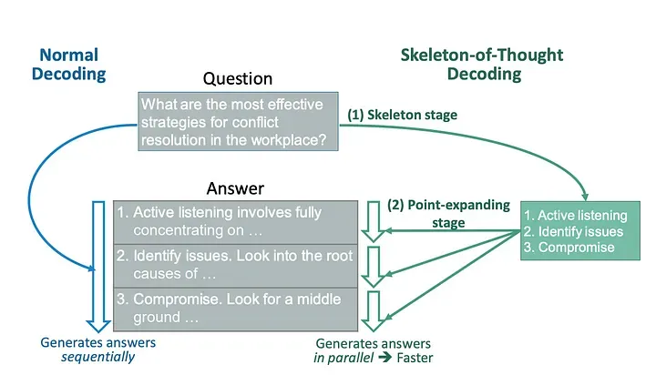

本文为转载文章
本文为转载文章，已获取授权 原链接: https://linux.do/t/topic/517417
本文系统梳理思维链（CoT）技术在大模型推理中的演进路径，解析其在数学推理、逻辑决策等场景的革新性突破，并探讨技术瓶颈与未来发展方向。
前言
====================
AI圈大型魔幻的玄学现场，搞大模型的程序员集体变身功德箱狂魔——每天烧着八位数电费炼丹，就为等模型"显灵"的那一刻。
人们一直在琢磨，怎么才能让大模型“涌现”。
所谓“涌现”，在大模型领域指的是当模型突破某个规模时，性能显著提升，表现出让人惊艳、意想不到的能力。比如语言理解能力、生成能力、逻辑推理能力等。一般来说，模型在 100亿（10B） 到 1000亿（100B） 参数区间，可能产生能力涌现。
但老话说得好“氪不救非，玄不改命”。靠砸钱和运气，只一味把模型做的大大大，未必能让AI“显灵”。
往功德箱里砸硬币——心诚则灵？
强大的逻辑推理是大语言模型“智能涌现”出的核心能力之一，好像AI有了人的意识一样。而推理能力的关键，在于一个技术——思维链（Chain of Thought，CoT）。
什么是CoT
==========================
CoT本质是给AI安装"戏精系统"，强行加戏中间推理步骤。结果却意外发现这帮AI原来不是学渣，是故意装傻的影帝！
在大模型(LLM)领域，CoT指Chain-of-Thought，也常被称作思维链，是一种大模型提示技巧，被认为最具开拓性和影响力的提示工程技术之一。与传统的提示方法强调直接的输入和输出互动不同，CoT迫使模型将推理过程划分为中间步骤，像老师逼着学霸写解题过程：你可以心算得出答案，但必须把‘解：设未知数为X…’一步步写出来，否则扣分！！！
通过一系列的中间步骤进行推导，逐步的生成最终答案。CoT思想十分符合人类的思思维逻辑：一步一步推导计算得出的数学题的答案，显然比直接写一个结果要靠谱的多。
CoT如何突破大模型推理瓶颈？
虽然从时间维度看，尽管CoT的概念早在2022年就已提出，但因为这项技术应用不深，加上在Input和Output过程中增加多步推理会增加相应的计算时间和算力成本，CoT当时并没有受到太大关注。
直到2023年以来，大语言模型在算术、常识、符号推理等任务上越发面临瓶颈，同时人们对大模型解决复杂任务的需求呼声越来越高，以CoT（思维链）为代表的大语言模型提示推理技术逐渐受到重视，并开始嵌入到主流的大模型的训练或推理中，成为显著提高大模型在算术、常识、符号推理等任务上的性能的关键技术。
那么，CoT究竟如何突破了大模型的推理瓶颈。
谷歌之前在大模型下了很大功夫，GPT 生成式预训练模型中的“T”，也就是 Transformer，就是谷歌大脑搞出来的。但是，预训练 + 精调的大模型搞了几年，仍然没办法很好地完成多步骤推理任务，比如数学问题和常识推理。
理想很丰满，现实很骨感，某些千亿参数的巨无霸模型做题水平还不如小学生。直到某个谷歌叛将（划掉）天才研究员Jason Wei，在功德箱里塞了张写着"解：设…"的小纸条——思维链（CoT）横空出世！
思维链的提出者 Jason Wei起初是 谷歌大脑的高级研究员，在任职期间，提出了思维链的概念，发现思维链可以在大语言模型中增强推理能力。2023 年 2 月他离开谷歌，加入了 OpenAI，进入 ChatGPT 团队，这也是思维链在 OpenAI 发扬光大，让 ChatGPT 拔得头筹的原因之一。
思维链提示的方法让大模型的逻辑推理能力不一样了。具体来说，有三个不一样：
- 常识推理能力赶超人类。以前的语言模型，在很多挑战性任务上都达不到人类水平，而采用思维链提示的大语言模型，在 Bench Hard(BBH) 评测基准的 23 个任务中，有 17 个任务的表现都优于人类基线。比如常识推理中会包括对身体和互动的理解，而在运动理解 sports understanding 方面，思维链的表现就超过了运动爱好者（95% vs 84%）。
- 数学逻辑推理大幅提升。一般来说，语言模型在算术推理任务上的表现不太好，而应用了思维链之后，大语言模型的逻辑推理能力突飞猛进。MultiArith 和 GSM8K 这两个数据集，测试的是语言模型解决数学问题的能力，而通过思维链提示，PaLM 这个大语言模型比传统提示学习的性能提高了 300%！在 MultiArith 和 GSM8K 上的表现提升巨大，甚至超过了有监督学习的最优表现。这意味着，大语言模型也可以解决那些需要精确的、分步骤计算的复杂数学问题了。
- 大语言模型更具可解释性，更加可信。我们知道超大规模的无监督深度学习，打造出来的大模型是一个黑盒，推理决策链不可知，这就会让模型结果变得不够可信。而思维链将一个逻辑推理问题，分解成了多个步骤，来一步步进行，这样生成的结果就有着更加清晰的逻辑链路，提供了一定的可解释性，让人知道答案是怎么来的。Jason Wei 这位奇男子提出的思维链，可以说是大语言模型惊艳世界的必要条件。
发展关系
- Few-shot → Zero-shot → CoT-SC→ ToT→CoAT
- CoT-SC 是对 CoT 进行增强，使其更加稳定可靠。
- ToT 则借鉴了 CoT 和 CoT-SC 的思想，并进一步结构化，使推理过程更像搜索和规划。
- 从Few-Shot到ToT的演进，本质是推理过程从线性向结构化转变。而COAT的出现，标志着这一进程进入自我优化阶段——模型不仅能规划推理路径，还能动态评估路径质量并重启搜索。
从Few-shot到ToT的演进，不仅是技术形式的迭代，更是推理范式从被动响应到主动规划的跃迁。以下将逐层解析各阶段的核心突破
Few-shot-CoT
区别于传统的 Prompt 从输入直接到输出的映射 input—>>>output 的方式，CoT 完成了从输入到思维链再到输出的映射，input—>>>reasoning chain—>>>output。如果将使用 CoT 的 Prompt 进行分解，可以更加详细的观察到 CoT 的工作流程。
一个完整的包含 CoT 的 Prompt 往往由指令（Instruction） ，逻辑依据（Rationale） ，示例（Exemplars）三部分组成。
- 指令：用于描述问题并且告知大模型的输出格式；
- 逻辑依据：指 CoT 的中间推理过程，可以包含问题的解决方案、中间推理步骤以及与问题相关的任何外部知识；
- 示例：指以少样本的方式为大模型提供输入输出对的基本格式，每一个示例都包含：问题，推理过程与答案。
核心是通过人工编写包含问题、详细推理步骤和答案的示例（demonstrations），引导大语言模型生成中间推理链以解决复杂任务。 这一方法被归类为 Few-shot-CoT，即需要提供少量示例来激发模型的推理能力
以一个数学题为例：
{kind=link}
{kind=link}
可以看到模型无法做出正确的回答。但如果说，我们给模型一些关于解题的思路，就像我们数学考试，都会把解题过程写出来再最终得出答案，不然无法得分。CoT 做的就是这件事！
Zero-Shot-CoT
Few-shot-CoT通过人工示例引导推理，显著提升了模型性能。然而，这种方法在开放域任务中面临挑战——当缺乏高质量示例时，模型表现可能大幅下降。为此，研究者进一步提出了零样本思维链（Zero-shot-CoT），试图仅通过自然语言指令激活模型的推理能力
! img
{kind=link}
零样本思维链（Zero Shot Chain of Thought，Zero-shot-CoT）提示过程是对 CoT prompting 的后续研究，引入了一种非常简单的零样本提示。他们发现，通过在问题的结尾附加“Let’s think step by step”这几个词，大语言模型能够生成一个回答问题的思维链。从这个思维链中，他们能够提取更准确的答案。
用‘Let’s think step by step’激活Zero-shot-CoT，本质上和对着路由器疯狂磕头念叨‘求求你快连上’没啥区别——但神奇的是，它居然真TM管用！
这么牛逼？哄一哄它它就生成解题过程和答案？AI：我这么好骗的吗？
其实 Zero-shot-CoT 是一个 pipeline。也就是说“Let’s think step by step”这句话，只是通过这个 prompt 让LLM 尽可能生成一些思考过程，然后再将生成的 rationale（理由） 和 question 拼在一起，重新配合一个answer 指向的 prompt 如“The answer is ”来激励模型生成答案。
从技术上讲，完整的零样本思维链（Zero-shot-CoT）过程涉及两个单独的提示/补全结果。在下图中，左侧生成一个思维链，而右侧接收来自第一个提示（包括第一个提示本身）的输出，并从思维链中提取答案。这个第二个提示是一个自我增强的提示。

Chain-of-Thought-Self-Consistency
尽管Zero-shot-CoT摆脱了对人工示例的依赖，但其生成的单一路径仍存在可靠性问题：一步错误可能导致全局崩溃。就像你要去广东，但是你错上了去广西的车，最终只会有人叫你diao毛，没有人会叫你靓仔！！！
Self-Consistency Improves Chain of Thought Reasoning in Language Models
这篇文章是 CoT 后很快的一个跟进工作，是 CoT 系列改进的重要一步，在 2022 年 3 月在arxiv上被放出来。文章提出的方法叫 思维链自一致性（Chain-of-Thought-Self-Consistency，也缩写成CoT-SC），是对 CoT 的自然扩展。
传统 CoT 依赖单一路径生成中间推理步骤，容易因某一步骤错误导致最终答案错误；这篇文章几乎用的和 CoT 完全一样的数据集和设置，主要改进是对答案进行了多数投票（majority vote），并且发现其可以显著地提高思维链方法的性能。 Self-Consistency 通过构建多个思维链，对每个思维链进行评估，最终选择最有效、最连贯的思维链。
想象CoT-SC是让AI召唤多重影分身：
- 分身1（钢铁侠）：用微积分狂炫技，三步解出答案；
- 分身2（美队）：坚持传统数学公式，规规矩矩推导；
- 分身3（浩克）：暴力穷举所有可能性，算力爆炸…
最后，AI本体像灭霸一样打个响指，把分身们的答案收束成唯一真理——哪个答案票数多，谁就是正确答案！
{kind=link}
一个简单的使用实例
通过多次调用模型生成多条推理链。例如：
问题：小明有5个苹果，吃了2个，还剩几个？
思考过程1：第一步，小明最初有5个苹果；第二步，小明吃了2个苹果；第三步，5 - 2 = 3。
答案1：3个苹果。
思考过程2：第一步，小明有5个苹果；第二步，吃掉2个后剩下3个。
答案2：3个苹果。
思考过程3：第一步，5个苹果减去2个等于3个。
答案3：3个苹果。
* 对多条推理链的答案进行投票或加权平均，选择高频答案（如“3”）。
Tree-of-Thoughts
如果把 CoT 看作“让模型学会思考”，CoT-SC 是“让模型更自洽地思考”，而 ToT 则是“让模型像人一样灵活地思考”，具备搜索、评估和优化能力。
ToT 的提出标志着 CoT 技术从线性推理向结构化搜索的跨越，为后续多模态推理奠定了基础。
CoT-SC通过多路径验证提升了推理的稳定性，但其生成的路径彼此独立，缺乏全局规划能力。受此启发，研究者提出了树状思维链（Tree of Thoughts， ToT），将线性推理扩展为结构化搜索，使模型能够像人类一样动态调整推理路径。
如果说CoT是让AI沿着一条路走到黑，ToT就是给AI装上‘分身术’：遇到岔路口时，派几个分身去探路，最后选一条最靠谱的走。
让AI学会分身术探路，不亚于把解题玩成密室逃脱：选A门还是B门？分头行动！这条路不通？时空回溯！
Tree-of-Thoughts (ToT) 的演进依赖于 Chain-of-Thought (CoT) 和 Self-Consistency (CoT-SC) 的思想，但它并非直接继承，而是在这些技术的基础上进行了创新和扩展。
CoT-SC通过生成多条推理链并集成答案，提升了模型的鲁棒性。ToT 借鉴了这种多路径思想，但将其扩展为树状结构，支持更复杂的路径探索与优化。
CoT-SC 的多路径推理是独立生成的，路径之间缺乏显式关联，而 ToT 通过树状结构将多路径关联起来，支持更复杂的全局规划。
ToT中搜索算法的选择需权衡任务特性：
- 广度优先搜索（BFS）：适用于路径深度有限但分支较多的任务（如代码纠错）。
- 深度优先搜索（DFS）：适合需长程规划的场景（如复杂数学证明）。
注意：CoT-SC 是独立路径，ToT 是结构化树状路径
ToT以树的形式组织其解决问题的策略。每个节点都被称为“思维”，是一个连贯的语言序列，是通往最终答案的一步。通过将问题划分为离散的“思想”单元——从填字游戏中的一系列简短单词到数学方程的一个组成部分——ToT确保问题的每个阶段都得到系统的解决。
{kind=link}
ToT的优势在于其有条不紊的组织。首先，系统会将一个问题分解，并生成一个潜在推理步骤或“思维”候选者的列表。然后，对这些想法进行评估，系统会衡量每个想法产生所需解决方案的可能性。
为了帮助模型识别最有效的思维序列，系统使用了常用的搜索算法，比如广度优先搜索（BFS）和深度优先搜索（DFS）。
ToT的重要性在于它的整体设计、适应性和效率都很高。其中，思维链提示是ToT框架中的一个特定实例。它的模块化性质意味着各个组件可以独立运行，包括问题的初始分解和所使用的搜索算法。
ToT的树状搜索机制，本质上是通过对推理路径的显式规划，模拟人类解决问题的试错过程。以24点游戏为例，其完整的推理流程如下：
24点游戏（概述版）
问题：用数字2、3、4、6和加减乘除得到24。
当前状态：2， 3， 4， 6
下一步操作1：2 + 3 = 5；剩余数字：4， 6
下一步操作2：2 * 3 = 6；剩余数字：4， 6
下一步操作3：4 + 6 = 10；剩余数字：2， 3
* **结果**：通过搜索算法找到最优路径“2 \* 3 = 6；6 \* 4 = 24”。
24点游戏（详解版）
目标：用数字 2、3、4、6 和加减乘除（每个数字用一次），得到 24。
ToT 的完整推理流程**
定义节点与状态
- 根节点：初始状态为可用数字
[2， 3， 4， 6]，目标为24。 - 中间节点：每次操作生成的新数字组合（如
2+3=5→ 剩余数字[4， 5， 6]）。 - 叶节点：最终状态（如只剩一个数字，判断是否等于24）。
生成可能的中间步骤（分支扩展）
模型在每一步生成所有可能的操作，例如：
第一步操作（初始状态 [2， 3， 4， 6]）：
- 操作1：
2 + 3 = 5→ 剩余数字[4， 5， 6] - 操作2：
2 × 3 = 6→ 剩余数字[4， 6， 6] - 操作3：
4 + 6 = 10→ 剩余数字[2， 3， 10] - 操作4：
6 ÷ 2 = 3→ 剩余数字[3， 3， 4] - …（其他可能的操作）
搜索与回溯（选择最优路径）
ToT 会尝试所有可能的路径，并选择最终能达成目标的路径。以下是两种典型路径的对比：
路径1：错误尝试
- 第一步：
2 + 3 = 5→ 剩余[4， 5， 6] - 第二步：
5 + 4 = 9→ 剩余[6， 9] - 第三步：
6 + 9 = 15→ 失败（15 ≠ 24）
结论：此路径无法达成目标，需回溯到上一步。
路径2：成功路径
- 第一步：
2 × 3 = 6→ 剩余[4， 6， 6] - 第二步：
6 × 4 = 24→ 剩余[6， 24] - 第三步：
24 ÷ 6 = 4→ 失败（但此时已生成24，提前终止）
结论：在第二步已生成24，提前终止并返回成功路径： 2 × 3 = 6 → 6 × 4 = 24
ToT 的 Prompt 设计
实际使用时，Prompt 需要引导模型生成中间状态并评估路径可行性。例如：
问题：用数字2、3、4、6和加减乘除得到24。
当前可用数字：[2， 3， 4， 6]
请生成所有可能的下一步操作：
- 操作1：2 + 3 = 5 → 剩余数字：[4， 5， 6]
- 操作2：2 × 3 = 6 → 剩余数字：[4， 6， 6]
- 操作3：4 + 6 = 10 → 剩余数字：[2， 3， 10]
- 操作4：6 ÷ 2 = 3 → 剩余数字：[3， 3， 4]
请选择最有可能达成目标的路径：
（模型通过搜索算法选择操作2 → 继续生成下一步操作）
优势：
- 全局规划能力超越 CoT 和 CoT-SC，适合需多步回溯的任务（如代码生成、游戏策略）。
前沿探索
Graph-of-Thoughts
将树结构演化为直接非循环图，引入了自我循环。自我循环可以巩固一条特定的思路，也可以将多个想法聚合成一个连贯的思路。
思维图（GoT）框架是CoT和ToT方法的更进一步。
在GoT中，一个LLM思想被建模为一个顶点，而一条边是这些思想之间的依赖关系。使用GoT，人们可以通过构造具有多个传入边的顶点来聚合任意的思想。总的来说，GoT所使用的图抽象无缝地将CoT和ToT概括到更复杂的思维模式，而不诉诸于任何模型更新。
GoT框架的核心是将思想概念化为有向无循环图（DAG）中的顶点。
在这种情况下，每个顶点都对应于输入刺激引发的特定想法或解决方案，无论是初步的、中间的还是最终的。
图中的有向边描述了这些思想之间的相互依存关系。具体地说，如果一条边从思维t1延伸到t2，则表示t2是基于t1构思的。
这种系统化允许思想的多样性，因为节点可以分为不同的类别，如“计划”或“结果”。
{kind=link}
GoT的新颖之处在于它能够对这些想法进行转换，进一步完善推理过程。主要的转变包括
- 聚合，即将几个想法融合成一个统一的想法；
- 精化，对单个思想进行连续迭代，以提高其精度；
- 生成，有利于从现有思想中产生新的思想。
这种转换强调推理路线的融合，相对于之前的CoT或ToT模型，提供了更复杂的观点。
此外，GoT引入了一个评估维度，通过评分和排名来对每个单独的想法进行评估。每个想法都由顶点表示，并根据其相关性和质量进行评估。
评估过程中，考虑了整个推理链，并分配了可能与图中其他顶点相关的分数。
这个框架还允许系统根据分数对这些想法进行分级，这对于确定哪些想法值得优先考虑或实施非常有用。
Graph-of-Thoughts（GOT）主要适用于需要多步逻辑推理和非线性思考的复杂任务场景。具体来说，它在以下场景中表现尤为突出：
- 数学与逻辑推理：例如解决排序问题、数学证明、多步算术问题、24点游戏等任务，GOT 能够通过聚合和回溯多个思维节点来提高推理准确性。
- 任务分解与规划：在需要将复杂问题拆分为多个子任务，再整合子任务结果的场景（如文档合并、集合运算、复杂计划制定等），GOT 的图结构能更灵活地捕捉各个子任务之间的依赖关系。
- 多模态和检索增强应用：在涉及多模态信息或者需要结合外部知识库进行事实核查和生成时，GOT 也可作为一种增强推理的机制，通过非线性整合多个信息来源来提高答案的可信度和准确性。
- 代码调试与算法设计：对于需要逐步展开和验证不同逻辑分支的编程或算法问题，GOT 能够帮助模型更系统地探索问题解决路径，进而生成更合理的解决方案。
示例
示例问题：
示例提示词（Prompt）：
请以“图的思维”（Graph-of-Thoughts）的方式详细展示你的推理过程，要求如下：
1. 将整个推理过程分解成若干个“节点”，每个节点代表一个独立的思考步骤；
2. 用箭头 “->” 表示节点之间的依赖关系（即后续节点基于前面节点的信息生成）；
3. 对于每个节点，请给出简短的描述，并说明该步骤的主要逻辑或公式推导；
4. 最后，请将所有节点的信息进行聚合，给出最终证明的结论。
例如，输出格式如下：
节点1：【问题分析】说明问题的关键点，例如指出需要证明不等式对于 \( n \geq 5 \) 成立；
节点2：【基础验证】计算 \( n=5 \) 时 \( 2^5 \) 与 \( 5^2 \) 的大小，验证初步成立情况（节点1 -> 节点2）；
节点3：【归纳假设】假设对于 \( n=k \) 时不等式成立，说明归纳假设（节点2 -> 节点3）；
节点4：【归纳证明】证明 \( n=k+1 \) 时不等式依然成立，解释归纳步骤（节点3 -> 节点4）；
节点5：【结论聚合】整合所有思路，给出最终证明结论。
现在，请用这种图的方式详细展示你的推理过程，并给出证明的结论。
Algorithm-of-Thoughts
ToT和GoT是通过基于搜索的机制来解决LLM推理的挑战的。它们能够生成许多图形形式的推理路径。然而，这两种方法都非常依赖于大量的LLM查询。有时，单个问题的查询数量甚至可以达到数百个。这导致了计算效率的下降。
思维算法（AoT） 是一种创新的方法，它具有动态和可变的推理路径。AoT的核心思想是通过不断演化和改进思考过程，从而达到更好的推理结果。通过维持一个单一的不断发展的思维上下文链，AoT巩固了思想探索，提高了效率并减少了计算开销。这种方法的优势在于它能够灵活地适应不同的问题和情境，并且能够根据需要进行调整和优化。
{kind=link}
除此之外，受“LLM遇到熟悉的新问题时，偶尔会求助于以前的解决方案”启发，AoT吸收了上下文中的例子，从经过时间考验的搜索算法中提取，如深度优先搜索(DFS)和广度优先搜索(BFS)。通过模拟算法行为，AoT强调了实现成功结果和从失败尝试中收集见解的重要性。
AoT包括四个主要组成部分：
1）将复杂问题分解为可理解的子问题，同时考虑它们的相互关系和单独解决的容易程度；
2）以连续和不间断的方式为这些子问题提出连贯的解决方案；
3）直观地评估每个解决方案或子问题的可行性，而不依赖于明确的外部提示；
4）根据上下文示例和算法指南，确定最有希望探索或回溯的路径。
Skeleton-of-Thought
思维框架（SoT）范式的独特设计主要是为了减少端到端生成延迟的挑战，而不是为了增强大型语言模型（LLM）的推理能力。
SoT的想法源于LLM和人类处理信息的方式的区别。
按顺序生成答案，而人类在很多情况下，会先提炼出答案的骨架，然后添加细节来解释每一点。SoT就是按照这种人类的思维方式，将生成过程分为两个阶段：首先，SoT让LLM生成答案的骨架，然后再让LLM给出骨架中每一点的答案。
在最初的骨架阶段中，系统不会生成全面的响应，而是提示模型生成简洁的答案骨架。通过精心制作的骨架模板，这种缩写表达抓住了预期答案的核心元素，从而为下一阶段奠定了基础。
在接下来的扩展阶段中，LLM系统会对答案骨架中的每个组成部分进行放大。它利用点扩展提示模板，同时阐述骨架的每个片段。
这种二分法将生成过程分为两个步骤：首先是生成初步的骨架公式，然后是并行进行详细扩展。这种方法不仅可以加快响应生成的速度，还可以努力维护输出的一致性和准确性。
[

SoT进行独立且并行的点扩展。因此，它不适用于需要逐步推理的问题，例如数学和编码。
为此，我们提出了SoT的扩展，称为带路由的SoT（SoT-R），它只在适当时自适应地触发SoT。
Program-of-Thoughts
将问答背后的推理过程公式化为一个可执行程序，将程序解释器输出作为最终答案的一部分。
**思维程序（PoT）**是一种独特的LLM推理方法。旨在提升大型语言模型（LLM）在数值推理任务中的表现。与传统的思维链（Chain-of-Thought，CoT）提示不同，PoT通过引导模型生成可执行的Python代码来表示推理过程，然后利用Python解释器执行这些代码以获得结果。这种方法将计算与推理分离，提高了模型在复杂数值推理任务中的准确性和效率。
与直接模型相比，这种方法强调将推理分解为顺序步骤，并将语义与变量相关联的能力。因此，PoT提供了一个更清晰、更具表达力和基础的答案推导模型，提高了准确性和理解力，尤其是对于需要进行数值计算的数学类型逻辑问题。
需要注意的是，PoT的程序执行不一定针对最终答案，而是可以作为最终答案的中间步骤的一部分。
{kind=link}
核心思想
- 代码即推理：将问题的解决过程转化为可执行的程序代码（例如生成 Python 脚本），利用代码的精确性和计算能力弥补纯文本推理的不足。
- 外部执行：生成的代码在外部环境（如 Python 解释器）中运行，直接输出结果，避免自然语言描述的模糊性。
- 分工协作：LLM 负责理解问题并生成代码，外部工具负责执行计算，两者结合提升复杂任务的准确性
适用场景：
- 复杂数值计算：PoT通过生成可执行的Python代码，将复杂的数值计算任务交由Python解释器执行，避免了大型语言模型在处理复杂计算时可能出现的错误，提高了计算的准确性。
- 多步骤推理：在需要多步骤推理的问题中，PoT能够将问题分解为多个可执行的代码片段，逐步解决子问题，增强了模型的推理能力。
- 数学和金融领域：研究表明，PoT在数学问题（如GSM8K、AQuA等数据集）和金融问题（如FinQA、ConvFinQA等数据集）上，相较于传统的思维链（CoT）方法，表现出更高的准确性。
Chain-of-Action-Thought
最新黑科技COAT已经能让AI边做题边改错，像极了学霸做完卷子还要给自己出模拟题。某些小模型靠着这套"作弊器"居然反杀GPT-4，AI圈即将进入"内卷修仙"时代。
ToT的树状搜索虽实现了结构化推理，但其搜索过程仍需依赖人工设计的启发式规则。为突破这一限制，研究者开始探索模型的自我优化能力。实现启发式搜索时，关键挑战在于让LLM能够在没有外部干预的情况下，判断何时进行反思、继续推理，或是探索替代方案。
2025年MIT与哈佛团队提出的「行动-思维链」（Chain-of-Action-Thought， COAT）技术，标志着CoT进入自我优化新阶段，AI也要"三省吾身"。
{kind=link}
- **启发式搜索能力：**使其能够在没有外部指导的情况下自我反思并自我探索替代策略
- 元动作标记设计：引入<|continue|>， <|reflect|>， <|explore|>等特殊token，赋予大模型动态调整推理策略的能力
- 继续推理（<|continue|>）：鼓励模型生成下一个中间步骤。
- 反思（<|reflect|>）：验证之前的推理步骤是否正确。
- 探索替代方案（<|explore|>）：识别推理中的漏洞并探索新的解决方案。
- 两阶段训练机制：先通过10k级小数据格式调优掌握推理范式，再采用重启探索(RAE)强化学习实现自我优化
- 小规模格式调优阶段：在少量推理轨迹示例的小数据集上进行微调，使模型熟悉 COAT 推理格式。
- 大规模自我优化阶段：通过强化学习（RL）优化模型性能，采用重启与探索（RAE）技术，提升模型的启发式搜索能力。
- 迁移能力突破：在GSM8K数学数据集上，7B参数的Satori模型正确率达83.6%，超越GPT-4的78.2% 这验证了"小模型+精细推理架构"替代纯参数扩展的可能性
小结
技术演进：需求倒逼创新的四个阶段
发展阶段
待解问题
关键技术突破
前CoT时代
复杂推理任务准确率<30%
传统端到端提示
Few-shot
需要显式引导推理路径
人工编写分步示例
Zero-shot
开放域任务无示例可用
"Let’s think step by step"触发
CoT-SC
单一路径可靠性不足
多路径自洽验证
ToT
线性推理缺乏全局规划
树状搜索+回溯机制
从时间顺序和技术演进来看，Few-shot-CoT 是 CoT 技术的起点，而 Zero-shot-CoT 是其自然延伸。两者的差异反映了研究者对大模型能力认知的深化：从依赖显式引导（Few-shot）到挖掘隐式能力（Zero-shot）。
思维链（Chain-of-Thought， CoT）技术不仅提升了模型的推理能力，还为我们提供了一个观察模型内部推理过程的窗口，从而帮助我们理解模型犯错的原因，并为进一步优化模型提供了机会。
CoT一定程度上解决了 传统模型的“黑箱”问题，CoT 技术通过引导模型生成中间推理步骤（如“第一步：……；第二步：……”），将模型的思考过程显式化。这使得我们能够清晰地看到模型是如何一步步推导出最终答案的。通过 CoT 生成的推理步骤，我们可以逐条检查模型的思考过程，从而定位错误发生的具体环节。通过分析 CoT 生成的推理步骤，我们可以发现模型的弱点，并针对性地改进模型。这种透明性使得 CoT 不仅是一种推理工具，更是一种分析和改进模型的强大手段。
应用场景
- 数学推理 在复杂的数学问题中，逐步推理有助于模型正确计算。例如，解决方程、计算面积等问题。
- 逻辑推理 处理逻辑谜题或需要逻辑推导的问题时，CoT 可以确保模型按照逻辑顺序推断。
- 问答系统 CoT 技术可以提高问答系统对复杂问题的回答准确性，特别是需要综合信息的问题。
- 代码生成与调试 通过逐步描述编码逻辑，模型可以更准确地生成代码或进行代码修复。
- 高风险决策支持 法律文书审查：通过思维链分解法律条款适用性（如合同纠纷中的过错认定步骤） 医疗鉴别诊断：展示病症推理路径供医生交叉验证（需配合知识图谱约束） 自动驾驶决策：记录突发路况的处置逻辑链，满足法规可追溯要求
CoT的优势
- **提高准确性：**逐步推理可以减少模型在复杂问题上的错误率，尤其是在数学和逻辑问题中。
- 增强解释能力： CoT 提供了解答过程的可解释性，用户可以清晰地理解模型是如何得出答案的。
- 适应多步骤任务： CoT 特别适用于需要多步骤推导的问题，如数学计算、逻辑推理和因果推断。
CoT的局限
尽管CoT在数学推理、代码生成等场景中表现亮眼，但其实际落地仍面临诸多挑战。这些局限性既源于技术本身的设计约束，也与大模型的能力边界密切相关
- 对模型能力的高度依赖
- 模型规模敏感性： CoT 的效果严重依赖大模型的参数量（如 GPT-4、PaLM 等）。小模型（<10B 参数）难以生成连贯的推理步骤，且易出现逻辑混乱。CoT就像健身房的VIP服务——只有‘大块头’模型（比如GPT-4）才能享受。小模型（小于100亿参数）用它，就像让小学生举铁，不仅举不动，还可能扭伤腰。
- 领域知识限制： 模型对任务领域的熟悉程度直接影响推理质量。若预训练数据中缺乏相关领域知识（如专业数学、法律），生成的推理步骤可能错误频出。
- 提示设计与示例的强依赖性
- 提示词敏感： 模型表现对提示词（如“Let’s think step by step”）的设计非常敏感，不同指令可能导致结果差异巨大。
- Few-shot 示例的质量门槛： Few-shot-CoT 需要人工编写高质量示例（问题→推理步骤→答案），低质量示例会误导模型，增加使用成本。
- 推理过程的可靠性问题
- 逻辑错误与不连贯性： 模型生成的推理步骤可能包含逻辑漏洞（如错误公式、遗漏关键条件）或前后矛盾。
- 错误传播风险： 若某一步骤出错（如计算错误），后续步骤可能延续错误，导致最终答案完全偏离正轨。
- 任务适用性局限
- 开放域任务表现弱： 对主观性强、无标准答案的任务（如创意写作、道德判断），CoT 的推理步骤可能牵强或无效。
- 多模态支持不足： CoT 目前主要针对文本任务，对需要结合图像、视频等多模态数据的复杂推理支持有限。
- 计算与成本瓶颈
- 计算开销大： 生成多步推理需要更多计算资源（如 token 数量、GPU 时间），导致推理速度慢、成本高。
- 实时性受限： 在需要快速响应的场景（如实时对话），CoT 的额外推理步骤可能影响用户体验。
- 可解释性的表面性
- 伪逻辑风险： 模型生成的推理步骤可能“看似合理但实际错误”，本质仍是统计拟合而非真正的逻辑推理，可解释性有限。
- 人类理解偏差： 用户可能过度信任模型生成的推理步骤，忽略其中潜在的逻辑漏洞。
展望
尽管CoT技术仍存在诸多不足，但其展现出的潜力已为AI推理开辟了全新方向。未来，围绕模型自我优化、多模态协同、低资源适配等方向的研究，或将成为突破当前瓶颈的关键。
魔杖可靠，而魔法尚未驯服。